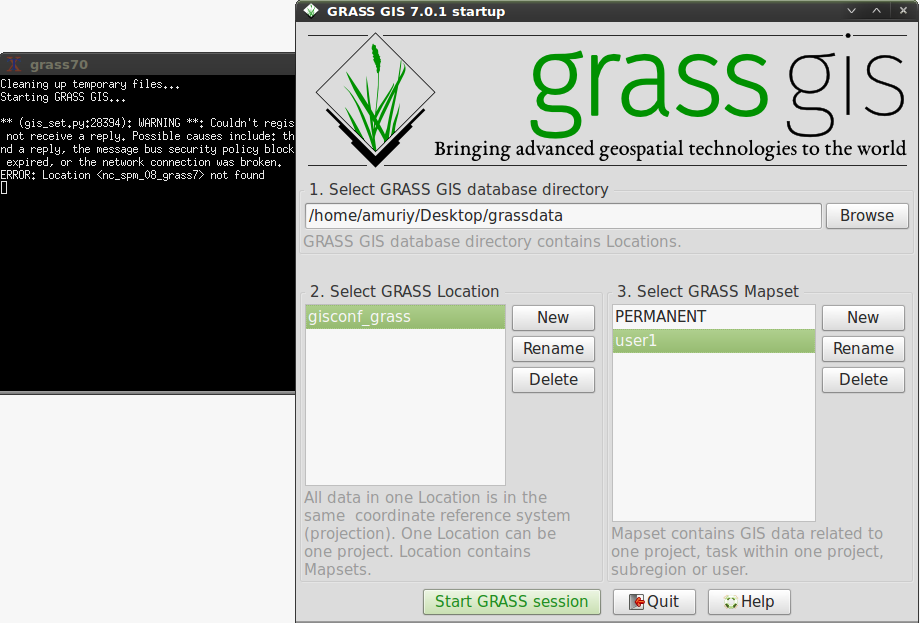

class: center, middle # Автоматизация задач в GRASS GIS ### Колесов Д., Мурый А. --- # Содержание * Устройство GRASS * Запуск GRASS * Интерфейсы (CLI/GUI) * Модули («команды») * Простая циклическая обработка * Последовательность команд == скрипт * Создание модулей * Параллелизация --- # Устройство GRASS: общие сведения * Модульная структура (более 300 модулей) * Модуль — отдельная программа (или скрипт), использующий библиотеки GRASS * В основе — принципы Unix: * Принцип «1 модуль — 1 функция» (не всегда) * Модули могут сочетаться / комбинироваться * Для запуска и работы модулей не нужно запуска граф.интерфейса, только общая инициализация (об этом ниже) * «Ядро» GRASS и большая часть основных модулей написана на С * Python-библиотека из нескольких модулей: * script — написание скриптов * PyGRASS — Python API * Собственные (внутренние) форматы данных для растров и векторов --- # Устройство GRASS: БД, область, набор .center[] * Строгая иерархия данных: * «База данных» (GISDBASE / database) — не настоящая БД, а набор директорий и файлов. * «Область» (location) — наподобие «проекта», определяется системой координат и географ. охватом. Включает наборы данных, информацию о подключении в база данных и т.д. * «Набор» (mapset) — набор данных. Часть проекта (области). Можно настроить отдельные права доступа, задать охват, отличный от умолчального. Набор **PERMANENT** должен быть всегда. * Области/наборы могут создаваться «на лету», например, в скрипте — нужно только правильно задать параметры. Можно переключаться между областями и наборами. --- # Запуск GRASS Запустите GRASS 7 с интерфейсом wxGUI; выберите область **gisconf_grass** и набор **user1**. .center[] * Всегда первым появляется окно терминала, т.к. GRASS запускается через интерпретатор командной строки (bash, CMD.EXE и т.п.) * Затем запускается граф. интерфейс --- # Интерфейсы: CLI/GUI * Командная строка (CLI) — основной метод работы с GRASS (исторически и в силу специфики), графический интерфейс (GUI) — «надстройка» * Графичеcкий интерфейс пользователя — **wxGUI** — основан на wxPython. .center[] * Окно менеджера слоев (1-4): 1. Дерево слоев 2. Командная консоль (урезанная) 3. Поиск модулей 4. Интерпретатор Python * Окно карты (5) --- # Модули («команды») * Модули разбиты на группы по функциональному назначению, например: | Тип модуля | Назначение| |:------------:|-----------| |g.* | Общее управление ГИС и интерфейсом| |r.* |Растровые данные| |v.* |Векторные данные| |...|...| * Принцип названий: '**группа\_модулей.имя\_модуля**' (g.region, r.to.vect, v.clean и т.п.) * Каждый модуль имеет параметры (опции) и флаги, контролирующие процесс выполнения. Например: ```bash g.region res=5 -p ``` * Посмотреть описание модуля и все его опции: '**имя\_модуля -help**' в командной строке. Например: ```bash g.region -help ``` --- # Варианты автоматизации задач * **Скрипты**: последовательный запуск модулей из любого интерпретируемого (скриптового) языка (например, shell, Python, Perl и т.д.) * В Unix-системах (GNU/Linux и т.д.) обычно активно используется командный интерпретатор *bash* и пишутся shell-скрипты. * Начиная с версии GRASS 7 все скрипты переписаны на Python и рекомендуется использовать именно его * **Внутренние** скрипты (исполняемые внутри интерактивной сессии GRASS) * **Внешние** (исполняемые вне сессии). Для их запуска необходимо задать специфические *переменные окружения* (GISBASE, GISDBASE, LOCATION_NAME, MAPSET). * wxGUI включает также *Graphical Modeller*, но это не наша тема --- # Основные функции вызова команд Обычно (в GUI не требуется) перед началом работы нужно импортировать модуль *grass.script*: ```python import grass.script as grass ``` После этого будут доступны следующие функции (на самом деле их больше): | | |-----------------|---------------------| | *grass.run_command()* | → запускает команду GRASS | | *grass.read_command()* | → запускает команду в подпроцессе, затем считывает ее вывод как строку символов | | *grass.parse_command()* | → аналогично *read_command*, но анализирует вывод и возвращает пары «ключ-значение» | | *grass.write_command()* | → запускает команду, которая считывает строку в качестве входа | ## Все функции устроены примерно одинаково: ```python grass.run_command('название-команды', параметр1=значение1, параметр2=значение2, ..., flags='список флагов', overwrite=True|False, quiet=True|False) ``` --- # run_command Запускает команду на выполнение. * Выполним в командной консоли wxGUI или в терминале: ```bash g.region res=5 -p ``` * Выполним в консоли Python: ```python grass.run_command('g.region', res=2, flags='p') ``` * Выполним в командной консоли: ```bash g.region -p ``` **Замечание**: в командной консоли wxGUI действуют стрелки для истории команд; в Python-консоли — Ctrl+стрелки. Чтобы вставить более 1 строки в Python-консоли — *ПКМ -> Paste Plus*. Видим, что команда выполнилась (разрешение изменилось), но ее вывод "потерялся". **ИТОГ:** использовать, когда нужно выполнить какую-либо команду, которая ничего не выводит на экран (или вывод нам не важен). --- # read_command Выполняет команду, а все, что она выводит на stdout сохраняет в строковую переменную. * Выполним в командной консоли: ```bash g.list type=vect ``` * Выполним в консоли Python: ```python vector_list = grass.read_command('g.list', type='vect') print vector_list ``` * Выполним в командной консоли: ```bash v.info map=elev_points -с ``` * Выполним в консоли Python: ```python info = grass.read_command('v.info', map='elev_points', flags='c') print info ``` **ИТОГ:** Можно получить вывод команды для дальнейшего анализа. Но анализировать нужно "руками". --- # parse_command Часто требуется не просто прочитать вывод команды, но и как-то отреагировать на него, например, извлечь какие-либо данные из результатов. * Выполним в командной консоли: ```bash v.univar map=elev_points column=value ``` * Выполним в консоли Python: ```python stat = grass.parse_command('v.univar', map='elev_points', column='value', flags='g') print stat max_val = stat['max'] print max_val ``` **ИТОГ:** Используется для анализа результатов работы команд, представимых в виде пар ключ-значение. --- # write_command: часть 1 Многие команды читают данные со stdin и каким-либо образом обрабатывают эти данные. Например, команда v.in.ascii создает векторные объекты, считывая их координаты из файла или stdin. Создадим, к примеру, векторную карту *pts* из точек со следующими координатами: X | Y | :--------|:--------| 638912.5 | 220422.5 638710.5 | 220274.5 638428.5 | 220544.5 638785.5 | 220687.5 638727.5 | 220174.5 Сохраним значения координат в текстовый файл c разделителями (например, *"pts.txt*"). Выполним в командной консоли: ```bash v.in.ascii input=pts.txt output=pts x=1 y=2 separator=space ``` --- # write_command: часть 2 Выполнить в консоли Python: ```python points = """ 638912.5 | 220422.5 | 2623 638710.5 | 220274.5 | 3843 638428.5 | 220544.5 | 1660 638785.5 | 220687.5 | 526 638727.5 | 220174.5 | 4607 """ grass.write_command('v.in.ascii', input='-', output='tmp', cat='3', x=1, y=2, separator='pipe', stdin=points, overwrite=True) ``` ## Задача на закрепление материала: Создать векторную карту на основе точек из elev_points. Все точки создаваемой карты должны быть сдвинуты по координате Y на 100 метров к северу. Понадобятся модули: * v.out.ascii * v.in.ascii --- # Тестовая задача Задача интерполяции рельефа по точкам с известной высотой * Есть набор точек, в которых были произведены какие-либо измерения (например, высоты). * Требуется, основываясь на отдельных измерениях, построить растр высот, то есть поверхность, покрывающую всю рассматриваемую территорию. ### Точность. Мы воспользуемся процедурой перекрестной проверки. 1. "Спрячем" часть точек от процедуры построения рельефа: удалим точки из исходной карты (поместим их во вспомогательную карту). 2. Выберем модуль, который будем использовать для интерполяции. Выберем некоторые начальные настройки этого модуля. 3. Построим рельеф на базе оставшихся точек. 4. Найдем погрешность в тех точках, которые были удалены из исходных данных (не использовались в построении рельефа). В итоге, повторяя процедуру для разных параметров мы будем получать разные погрешности нашего рельефа. Тот набор параметров, который обеспечивает наименьшую погрешность в "незнакомых" точках мы и будем использовать как оптимальный. --- # Интерполяция сплайнами Метод сплайнов (модуль v.surf.rst, Regularized Spline with Tension) моделирует поведение гибкой растяжимой пластины, которая закрепляется между точками. ```bash v.surf.rst -c input=name [zcolumn=name] elevation=name aspect=name where=sql_query \ tension=float smooth=float ``` Параметры: * input=name → название входной векторной карты с высотами; * zcolumn=name → название столбца, в котором хранятся высоты; * elevation=name → название выходной растровой карты с высотами; * aspect=name → название выходной растровой карты с экспозицией склонов; * where=sql_query → SQL-запрос для выборки точек, учасствующих в расчетах. Пример запуска: ```bash g.region vector=elev_points res=2 v.surf.rst elev_points elev=elev_2m zcol=value aspect=asp_2m r.colors map=asp_2m color=aspect ``` --- # Параметры настройки: tension и smooth Метод сплайнов моделирует поведение гибкой растяжимой пластины, которая закрепляется между точками. * **tension** («эластичность») — моделирует степень растяжения пластины в диапазоне от жесткой пластины до эластичной мембраны. Чем меньше значение параметра, тем тверже считается пластина, соответственно на выходе получаются малорельефные, "плоские" поверхности. Соответственно, в местах резкого изменения высот низкие значения параметра излишне сглаживают рельеф. Высокие значения параметра приводят к созданию эластичной резиновой мембраны, и в результате каждая точка "вытягивает" эту мембрану в свою сторону и вокруг точек появляются локальные "пики" или "ямы". * **smooth** («гладкость») — параметр можно представить как пружины, прицепленные к каждой точке, которые "тянут" пластину к себе. Чем больше значение параметра, тем «мягче» пружина и тем большее допустимое отклонение пластины от точек. Чем меньше параметр, тем сильнее пружина, и при нулевом значении параметра пластина пройдет точно через точку. GRASS позволяет задать каждой точке свое значение smooth. **Замечание** Процедура перекрестной проверки уже встроена в модуль, но мы воспроизведём ее в учебных целях. --- # Подготовка данных для расчетов 1. Разобьём точки на обучающее и тестовое множество. ```bash g.copy vector=elev_points@PERMANENT,elevation v.kcv map=elevation@user1 npartitions=10 v.extract input=elevation output=test where="part=10" v.db.addcolumn map=test columns="elev double, error double" v.edit map=elevation tool=delete where="part=10" ``` 2. Построим рельеф и считаем с него данные ```bash v.surf.rst input=elev_points elev=elev_2m zcol=value smooth=10 tension=0.1 --o v.what.rast map=test raster=elev_2m column=elev ``` 3. Найдём погрешность ```bash v.db.update map=test column=error query_column="value - elev" v.univar map=test column=error ``` --- # Скрипт: часть 1 Последовательность построения рельефа и расчет погрешности оформим в виде функции на Python: ```python import uuid # Для генерирования уникальных имен карт def get_error(input_map, zcol, test_map, smooth, tension): output_map = uuid.uuid4().hex grass.run_command('v.surf.rst', input=input_map, elev=output_map, zcol=zcol, smooth=smooth, tension=tension, segmax=30, npmin=140, overwrite=True) grass.run_command('v.what.rast', map=test_map, raster=output_map, column='elev') grass.run_command('v.db.update', map=test_map, column='error', query_column="value - elev") # Удалим временную карту высот grass.run_command('g.remove', type='raster', name=output_map, flags='f') result = grass.parse_command('v.univar', map=test_map, column='error', flags='g') return result ``` --- # Скрипт: часть 1 В консоли Python выполним: ```python import uuid smooth = 10.0 tension = 0.1 input_map = 'elev_points' test_map = 'test' get_error(input_map, 'value', test_map, smooth, tension) ``` В результате получим: ```python { ... 'min': '-8.63614', 'max': '4.13537', 'sum': '-97.4503', 'range': '12.7715', 'mean_abs': '1.26071', 'mean': '-0.162417' } ``` --- # Скрипт: часть 1 Создадим функцию, которая находит оптимальный набор параметров. Она будет получать на вход шаг изменения параметров и "пробегать" параметры с заданным шагом, вызывая функцию get_error. ```python def optimize(input_map, zcol, test_map, smooth_step, tension_step, smooth_max=100, tension_max=200): opt = 10000000 # Большое число tens = sm = None s = t = 0 while s< smooth_max: while t < tension_max: err = get_error(input_map, zcol, test_map, s, t) err = float(err['mean_abs']) if err < opt: opt = err tens = t sm = s t = t + tension_step s = s + smooth_step return sm, tens ``` Выполним в консоли Python: ```python optimize(input_map, 'value', test_map, smooth_step=20, tension_step=30) ``` --- # Собираем все вместе в командный файл: [Командный файл script1.py]( https://github.com/KolesovDmitry/gisconf-grass-scripting/blob/gh-pages/script1.py) Запускаем скрипт в Command Console: python script1.py --- [Скрипт script2.py]( https://github.com/KolesovDmitry/gisconf-grass-scripting/blob/gh-pages/script2.py) ```bash script2.py input=elevation output=elev_2m test_map=test \ zcolumn=value smooth_step=20 tension_step=20 smooth_max=100 tension_max=200 ```